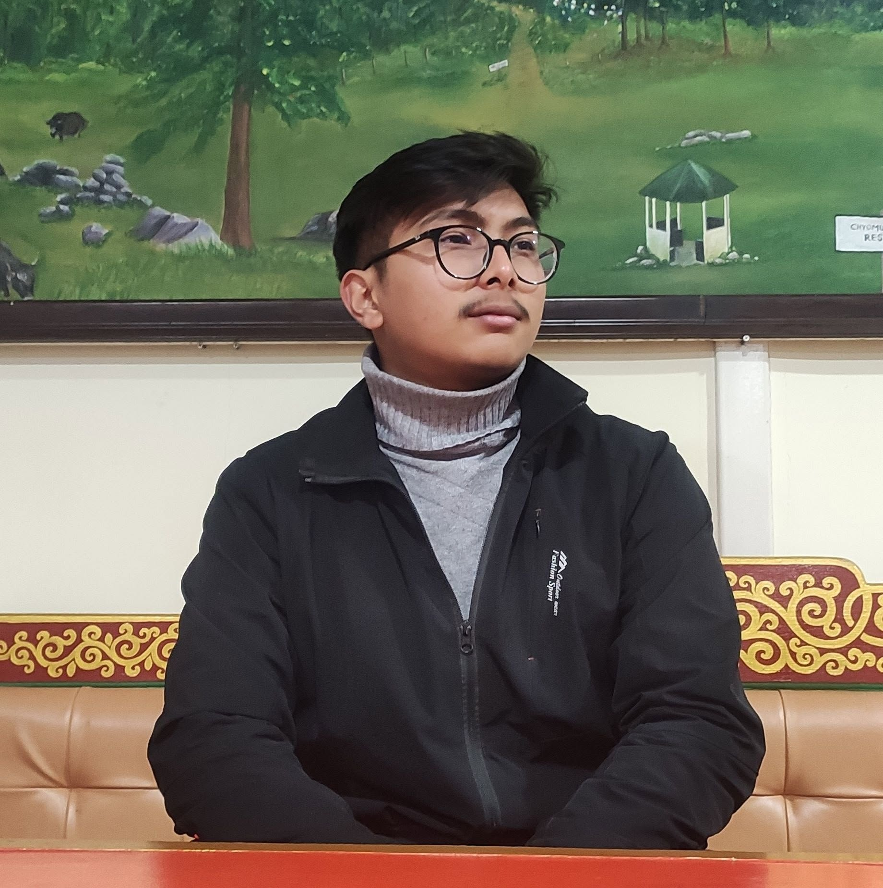

Bachelor of Information Technology student in Kathmandu, building at the intersection of AI data work, no-code tools, and web development — with an eye trained by thousands of hours of precise annotation.

I'm a BIT student at Mid-Valley College, motivated by AI, technology, and digital problem-solving. My path into tech started somewhere unusual: labeling data — bounding boxes around rooftops, cut types, and objects most people never think twice about — where accuracy and consistency aren't optional.
That habit of close, careful looking carries into everything else I build, from no-code prototypes in Notion and Google Sites to console apps written in Python. I pick up new tools fast when a project needs it, and I stay calm when deadlines are tight.
Outside of coursework, I edit video, design thumbnails, and tinker with hardware — the same instinct for detail, just pointed at a different canvas.
Performed bounding box annotation for AI/ML training datasets, including rooftops and cut-type classification. Built a personal workflow and reference guide that improved speed and accuracy, and learned to work through ambiguous tasks with limited documentation.
Built a functional mobile educational game prototype under a tight deadline. Used iterative testing and feedback cycles to raise engagement by 25%, learning a new tool quickly to keep the project moving.
Console-based system for managing courses, students, and grades, built with object-oriented programming concepts and tested for accuracy — a structured exercise in problem-solving and workflow design.
Personal website mockups built in Notion and HTML. YouTube thumbnails and social graphics designed in Canva, Photoshop, and Picsart, plus video edits produced in CapCut and Filmora.
Reach out if you're hiring or collaborating.